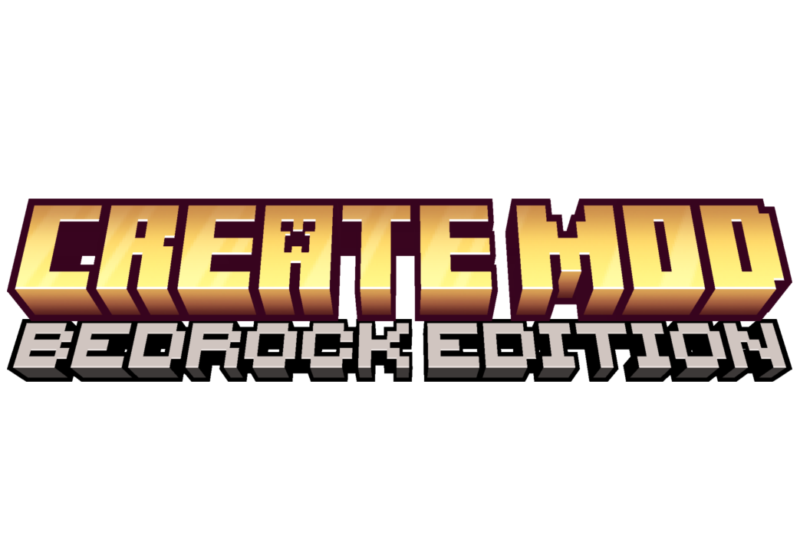

Sobre o Create Addon Minecraft Bedrock
Essa é uma modificação do Addon do VATONAGE, todos os créditos a ele. É um addon simples para o Create que introduz novas possibilidades de automação.
Através de novas receitas (razoavelmente) equilibradas, este mod torna dezenas de recursos do Minecraft renováveis.
Por exemplo, o Tufo agora é renovável, oferecendo aos jogadores uma fonte confiável de Minérios e Experiência. Isso também inclui itens raros e loot, em uma taxa muito menor.
Já sonhou em automatizar Diamante ou Netherite? Agora é possível!
Changelog (Atualizações)
- Changes in Version 2.1:
- Mixing: Cobblestone + Nether Quartz = Diorite, and Diorite + Nether Quartz = Granite.
- Mixing: 9 Iron, Gold, or Zinc Nuggets = 1 Iron, Gold, or Zinc Ingot.
- Mixing: 9 Experience Nuggets = 1 Block of Experience.
- Mechanical Drill: Drops Experience Nugget with a 50% chance when breaking any infested block.
- Encased Fan: Now transforms multiple items at once in 7 seconds.
- Changes in Version 2:
- Added Spout, Pump, Blaze Burner, Fluid Pipes, Smart Chute, Mechanical Crafter, Item Vault, Hatch, Sand Paper, Item Drain
- Deployer now works with more items
- Added Tutorial Menu in Minecraft pause page
- O Chute pode ser quebrado no modo sobrevivência com uma picareta ou com a mão em 1.5 segundos.
- Outras correções de bugs e receitas adicionadas.
Funcionalidades do Deployer
- Portas (_door): Abre/fecha
- Alçapões (_trapdoor): Abre/fecha
- Cercados (_fence_gate): Abre/fecha
- Alavancas (lever): Alterna estado
- Botões (button): Pressiona (volta após 20 ticks)
- Mudas (sapling): Coloca no solo adequado
- Plantio (crop_plants): Semente → plantação (farmland) (Wheat, beetroot, pumpkin, melon, torchflower, pitcher, carrot, potato)
- Cana-de-açúcar: Coloca perto de água
- Cactus: Coloca em areia
- Espada: Ataca entidades com dano base + encantamentos (Sharpness, Smite, Bane of Arthropods)
- Machado: Remove casca de troncos (stripped logs) e rompe blocos de madeira
- Pá: Cria caminho (grass_path/dirt_path) e rompe blocos de terra/areia
- Enxada: Cria farmland e cobre coarse_dirt → dirt
- Picareta: Rompe minérios e pedras
- Balde vazio: Preenche de água/lava
- Balde com líquido: Coloca água/lava no mundo
- Isqueiro (flint_and_steel): Acende fogo
- Osso (bone_meal): Aplica fertilizante em plantações, faz árvores crescerem, avança estágios de crescimento
- Tosa de ovelhas/mooshroom (shears): Dá lã/cogumelos
- Balde em peixes: Coleta peixe em balde
- Balde em vaca/goat/mooshroom: Coleta leite
- Alimentação/Reprodução: Alimenta animais com seus itens favoritos (Cow, sheep, pig, chicken, rabbit, bee, etc.)
- Casings: Madeira stripping + alloy/brass/copper → casing
- Cogwheels: Shaft + planks → cogwheel/large_cogwheel
- Rose Quartz: Sand paper + rose quartz → polished rose quartz
- Copper waxing: Honeycomb em cobre
- Copper dewaxing: Machado em cobre encerado
- Entidade create:deployer_filter para filtrar itens
- Propriedade create:deployer_filter_item para definir item filtrado
- Modo "hand_equipped" para ferramentas
- Animações baseadas em RPM (snap to power of 2)
- Visual de item na mão do deployer
Lista Completa de Receitas
- Cascalho e 3 Farinhas de Osso para Calcita.
- 6 Blaze Powder para 1 Blaze Rod.
- Netherrack e Pederneira para Redstone.
- Carvão e Blaze Powder para Pólvora.
- Pedregulho e Nether Quartz para Diorito.
- Diorito e Nether Quartz para Granito.
- 9 Pepitas de Ferro, Ouro ou Zinco para 1 Barra correspondente.
- 9 Pepitas de Experiência para 1 Bloco de Experiência.
- Calcita para Lápis Lazúli.
- Crying Obsidian para Amethyst Shard.
- Nether Brick para Fragmentos de Netherite (extremamente raro — 1 em 50 blocos)
- Soul Sand para Pó de Pedra Luminosa.
- Soul Soil para Blaze Powder.
- Tufo para Crushed Raw Zinc e Crushed Raw Copper (50% de chance cada)
- Gelo Compactado para Gelo Azul.
- Pedregulho para 1 Tufo (chance de 1 em 9)
- Bloco de Carvão para 1 Diamante (chance de 1 em 9)
- Basalto para Netherrack.
- Obsidian para Crying Obsidian.
- Carvão Vegetal para Carvão.
- Papoula para Rosa do Wither.
- Olho de Aranha para Olho de Aranha Fermentado.
- Maçã para Fruta do Coro.

Create V2.1.zip • Minecraft Bedrock Edition
IMPORTANTE! Requisitos de Instalação
Para usar este addon, certifique-se de seguir exatamente estes passos:
- 1 Crie um novo mundo ou edite um existente.
- 2 Abra a seção Experimentos (Experiments).
- 3 Ative Beta APIs. (O addon não funcionará sem isso ativado!)
- 4 Para jogadores nas versões 26.20+, você também deve ativar a opção Upcoming Creator Features.
Para jogadores do Addon Create do Vatonage: O jogo às vezes pode ter bugs de cache. Certifique-se de excluir seu addon antigo baixado (CREATE ADDON BY VATONAGE) dos seus arquivos primeiro antes de baixar e importar o novo.
Comentários
Nenhum comentário ainda. Seja o primeiro a compartilhar o que achou!